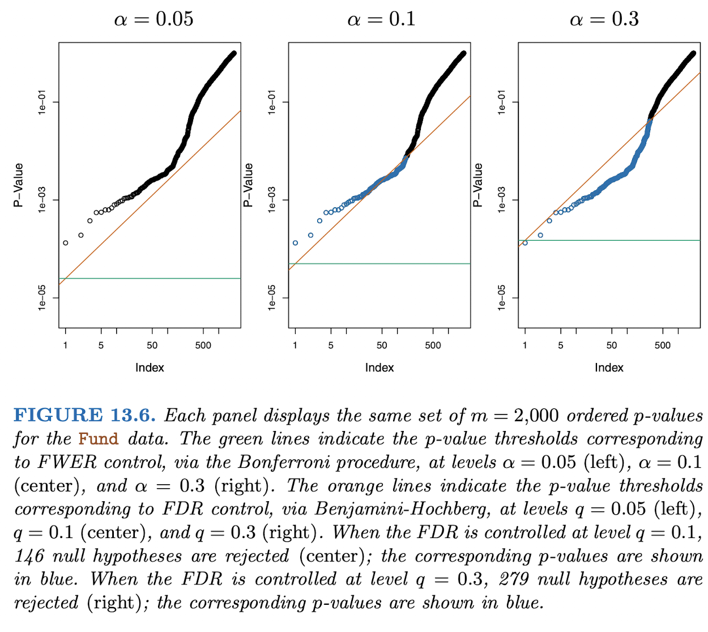

Family-wise Error Rate and FDR
Family-wise Error Rate and False Discovery Rate
Suppose you are testing \(m\) different hypotheses.
For an individual hypothesis, let \(\alpha\) be the probability you falsely reject the null hypothesis given \(H_{0i}\) is true. In a family of hypotheses, say \(H_0\) is the hypothesis that for all your individual tests, \(H_{0i}\) is true. According to Bonferroni, if \(\alpha_{f}\) controls your family-wise error rate, i.e. probability you falsely reject atleast one of the individual hypotheses, then \(a\) is at most = \(\frac{\alpha_f}{m}\)
So we can imagine that as m increase, \(\alpha\) decreases for each individual test, while this controls Type 1 error, it also decreases the likelihood of rejecting \(H_{0i}\) when it is not true, as C.I. increases. It decreases the number of true positives we observe. In biological investigations such as wanting to find the number of significant genes/drug targets in a mechanism, this can prevent us from discovering them (p-value for the test is less likely to be \(< \alpha\)
Now consider this breakdown of your m tests.
| Don’t reject | Reject | Total | |
|---|---|---|---|
| \(H_0\) is true | \(U\) | \(V\) | \(m_0\) |
| \(H_0\) is false | \(T\) | \(S\) | \(m-m_0\) |
| \(m - R\) | \(R\) | \(m\) |
Instead of wanting to control FWER for the sake of finding some true “discoveries”, say you are willing to let some false positivies slip through. Then, a less stringent quantity to control is the FDR = \(E[ \frac{V}{R}]\) i.e., the average number of falsely rejected tests \(V\) out of all rejected tests \(R\)
Using the Benjamini-Hochberg procedure:
- Set FDR = $q$. i.e., you don’t want the ratio of falsely rejected tests to be more than \(q\).
- Order the p-values for your m-tests such that \(p_{(1)} <= p_{(2)} …<= p_{(m)}\)
- let \(L\) be the maximum of indices \(1,2,…m\) where \(p_{(i)} <= \frac{qi}{m}\)
- We reject all tests where above inequality holds. Using this method, we’ve defined a less stringent \(\alpha_i\) for each of our individual \(H_{0i}\)’s.
- Out of all the rejected tests (i.e. where \(p_{(i)} <= \frac{qi}{m}\) holds), we’d expect \(q*100\) % of them to be falsely rejected.
